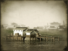

Basic Unit Statistics (can be modified by difficulty level, arts, skills, traits and retainers)
| Recruitment Cost | 360 | |
| Upkeep Cost | 50 | |
| Marines | 10 | 8% |
| Seamen | 5 | 2% |
| Gunners | 6 | 3% |
| Accuracy | 5 | 7% |
| Reloading Skill | 5 | 12% |
| Hull Strength | 250 | 2% |
| Morale | 10 | 20% |
Strengths & Weaknesses
- Can support bigger ships
- Fast, good manoeuvring
- Small crew
- Low morale
- Weak against artillery
Abilities
- Fast Reload - This increases the reload skill of a ship's crew for a short period of time.
- Overheat Engine - This increases a ship's speed for a short period of time.
Requires
- Buildings: 
Description
Small, fast moving and manoeuvrable, the Chiyodagata is affordable yet effective.
The Chiyodagata is a fast-moving gun boat which is best employed in support of larger vessels. Manoeuvrability is her greatest asset, along with affordability. The decks are crewed by rifle-armed sailors who also man the limited number of cannon she carries. This type is weak against any type of artillery, which encourages low morale among the crew as they fear attack from larger vessels. The original Chiyodagata was the first steam warship built in Japan. She was constructed in 1863 by Ishikawajima shipbuilders, who went on to design the murasame class of destroyers used by the Imperial Japanese Navy in World War II. Although the Chiyodagata was commissioned as part of the Tokugawa navy, she changed hands several times during the course of the Boshin War. The first instance was following the Battle of Hakodate Bay where she was grounded and then captured by Imperial forces. She was particularly busy in 1868 when she changed hands twice; however, a year later she was stricken from the naval roster, and ended her life as a whaling ship.